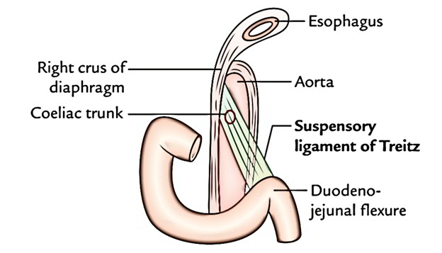

Symptoms and Symptomatic Management¶
In Taking History: CC, Etiology, Complications
Always ask myself
- what fits
- what does not fit
- what I expect but did not findwhat additional information do I need?
Common General Symptoms¶
Drowsy, tachycardiac, febrile patient¶
- Sepsis esp CNS infection
- Thyroid storm
- Heat stroke
- Note estacy is associated with heat stroke
- Sympathetic toxidrome
-
Neuroleptic malignant syndrome
-
Anticholinergic toxidrome
Fever 发烧¶
Traveller's Fever¶
Pyrexia of unknown origin (PUO)¶
Sweat 出汗¶
Chills 发冷¶
Fatigue 疲劳¶
Fatigue is extreme tiredness and lack of energy or motivation for everyday activities.
Malaise¶
Malaise mainly viral infection.
Decreased effort tolerance only when we care about congestive heart failure.
Malaise refers to an overall feeling of discomfort and lack of well-being.
Life Style Issues¶
Lack of sleep Alcohol abuse Unhealthy diet Too much caffeine Not being active enough
Short-Term (Acute) Illnesses¶
A sudden infection that eventually runs its course can shock your body. There are several diseases that are more closely linked with malaise. The most common ones and their symptoms -- in addition to malaise -- include:
| Condition | Features |
|---|---|
| Acute bronchitis or pneumonia | fever, chills, cough, and chest pain |
| Mononucleosis ("mono") | sore throat, headache, and swollen tonsils and lymph nodes |
| Flu | fever, cough, sore throat, runny nose, and body aches |
| Lyme disease | rash, achy or swollen joints, night sweats, and be sensitive to light |
| Hepatitis | flu-like symptoms and have belly pain, dark urine, and pale stools |
| Fibromyalgia | oint pain and tenderness, sleep problems, trouble concentrating, and morning stiffness |
Long Term Illness¶
Malaise can be an early sign or ongoing symptom of long-term illnesses like:
| Condition | Features |
|---|---|
| Kidney disease | nausea, muscle cramps, vomiting, poor appetite |
| Severe anemia | feel dizzy and have pale skin, leg cramps, and a fast heartbeat |
| Diabetes | very thirsty or hungry, dry mouth and blurred vision and polyuria |
| Congestive heart failure | irregular heartbeat, SOB, and wheezing. Your legs might also swell. |
| Arthritis | joint pain, stiffness that improves with activity, and less range of motion |
| Chronic fatigue syndrome | extremely tired, unrefreshing sleep, trouble concentrating |
| Depression | Mental health condition, cranky and helpless |
Any major stress to your body, such as injury or surgery, can also cause malaise.
Weight Changes 体重改变¶
Weight Losses¶
Weight Gain¶
Poor Weight Gain¶
Loss of Appetite 食欲不振¶
Functional Decline¶
Allergy¶
Head and Neurology Symptoms¶
Headache 头痛¶
Presyncope / Syncope 要晕倒 / 失去知觉¶
Dizziness 头昏眼花¶
Vertigo 晕眩¶
Weakness¶
Sensory Disorders¶
Numbness¶
Paraesthesia¶
Movement Disorders¶
Tremor¶
Gait Abnormality¶
Clumsiness¶
Loss of Balance¶
Paralysis¶
Loss of Memory¶
Seizures¶
Focal Neurology¶
Cranial Nerve Palsies¶
Altered Mental Status¶
Change in Behavior¶
Eye Symptoms¶
Vision Reduction* 视力退步¶
Blurring of Vision 视线模糊¶
Visual Spots 黑点¶
Visual Flashes 闪亮光¶
Complete Visual Loss¶
Diplopia* 复视¶
Painless Redness 红眼¶
Painful Eye 眼睛疼¶
Discharge 眼部分泌物¶
Excess Tearing 眼泪过多¶
Ear Symptoms¶
Hearing Impairment 听力退步¶
Earache 耳朵疼¶
Ear Discharge 耳朵分泌物¶
Tinnitus 耳鸣¶
Nose Symptoms¶
Change in Smell 嗅觉改变¶
Epistaxis 鼻出血¶
Runny Nose 流鼻涕¶
Stuffy Nose 鼻塞¶
Oral Cavity¶
Toothache 牙痛¶
Gum Bleed 牙床出血¶
Sores 口疮¶
Change in Taste 味觉改变¶
Throat¶
Sore Throat 咽喉痛¶
- Tonsilitis 扁桃腺炎
Dysphagia 吞咽困难¶
Odynophagia¶
Hoarseness 声音嘶哑¶
Voice changes 声音改变¶
- Slurred speech, think stroke.
Neck and Lymph Nodes¶
Stiff Neck 颈部僵硬¶
Pain in the Neck 颈部疼痛¶
Lymphadenopathy 淋巴腺肿大¶
Breasts¶
Lumps 硬块¶
Discharge 分泌物¶
Pain 痛¶
Heart¶
Angina¶
Palpitations 心悸¶
Irregular Heartbeat 心律不整¶
Sinus Tachycardia¶
Differentials

-
Anemia is usually Folate / B12; some Fe deficiency requiring referral to Gastro for scope
-
Don't forget coffee as an offensive drug
-
Danger must rule out: PE
Murmurs¶
Respiratory¶
Shortness of Breath 呼吸困难¶
- On exertion
- At night
Pleuritic Chest Pain¶
Cough 咳嗽¶
Hemoptysis 咳血¶
Sputum 痰¶
Breathing Sound 气喘声¶
- Stridor or wheezing
Abdominal¶
Acute Abdominal Pain¶
Dangerous things to rule out
- Vascular conditions: mesenteric ischemia, aortic dissection, rupture of abdominal aneurysm
- Surgical conditions: appendicitis, cholecystitis
Easily missed diagnosis
- Muscle strain of abdominal wall
- Herpes Zoster
There are three types of pain
- Somatic pain
- Visceral pain
- Referred pain
Pathophysiology
- Luminal obstruction
- Inflammation
- Peritonitis
General Approach¶
Evaluation is driven by location
- Systems for reference
- Gastrointestinal:
- Gastric: Gastritis, GERD, peptic ulcer disease, gastric outlet obstruction,
- Liver: acute or chronic hepatic failure with resulting complications (e.g., ascites), acute hepatitis (e.g., viral, autoimmune, alcoholic, drug-induced), abscess
- Gallbladder / Billary System: biliary colic, cholecystitis/cholelithiasis, cholangitis
- Pancreas: pancreatitis, pancreatic cancer, pancreatic ischemia
- Bowel: food poisoning, inflammatory bowel disease, intestinal ischemia, intestinal obstruction, irritable bowel syndrome, diverticulitis/diverticulosis, appendicitis, perforation/peritonitis (e.g., gastric, colonic, intestinal), tumor (e.g., gastric, hepatic, pancreatic, intestinal, colonic)
- Lymph nodes: mesenteric adenitis
- Cardiac: Myocardial infarction, angina pectoris, abdominal aortic aneurysm dissection or rupture.
- Pulmonary: Pleurisy, lower lobe pneumonia, pulmonary infarction, tumor.
- Psychogenic: Anxiety, panic disorder, somatoform disorder, post-traumatic stress disorder.
- Renal: Nephrolithiasis, pyelonephritis, UTI, testicular torsion, epididymo-orchitis cystitis, tumor.
- Haemotological: splenic infarct, splenic rupture, AAA rupture
- Musculoskeletal: Abdominal wall muscle strain, hernia (e.g., ventral, inguinal, incarcerated), abscess (e.g., psoas, subphrenic), trauma (e.g., contusion, hematoma), cutaneous nerve entrapment.
-
Metabolic and nutrition: Drug overdose, diabetic ketoacidosis, iron or lead poisoning, uremia, acute intermittent porphyria, hypercalcemia, Medication, vitamin, and herbal supplement side effects, Dietary factors, Heavy metal poisoning, Familial Mediterranean fever, Angioedema
-
Conditions not easily picked up in a location driven approach
- Abdominal wall: strain, hernia, herpes zoster
- Others: IO, mesenteric ischemia, peritonitis, narcotic withdrawal, sickle cell crisis, porphyria, IBD, heavy metal poisoning
| Conditions | Right | Center | Left |
|---|---|---|---|
| Upper | Pulmonary: PE, pneumonia Renal: UTI, pyelonephritis, nephrolithiasis Hepatic: abscess, hepatitis, mass Biliary: cholecystitis, cholelithiasis, cholangitis |
Biliary: cholecystitis, cholelithiasis, cholangitis Cardiac: angina, MI, pericarditis Gastric: Esophagitis, gastritis, PUD Pancreatic: mass, pancreatitis Vascular: Aortic dissection, mesenteric ischemia |
Cardiac: angina, MI, pericarditis Gastric: Esophagitis, gastritis, PUD Pancreatic: mass, pancreatitis Vascular: Aortic dissection, mesenteric ischemia Renal: UTI, pyelonephritis, nephrolithiasis |
| Middle | Gastric: Esophagitis, gastritis, PUD GI: Early appendicitis, IO |
||
| Lower | Appendicitis / peritonitis, colitis, diverticulitis, IBD, IBS Gynaecological: ectopic pregnancy, fibroids, ovarian mass, torsion, PID Renal: cystitis, nephrolithiasis, pyelonephritis |
Appendicitis / peritonitis, colitis, diverticulitis, IBD, IBS Gynaecological: ectopic pregnancy, fibroids, ovarian mass, torsion, PID Renal: cystitis, nephrolithiasis, pyelonephritis |
Sigmoid diverticulitis (most common) hence focus of investigation. Colitis, IBD, IBS Gynaecological: ectopic pregnancy, fibroids, ovarian mass, torsion, PID Renal: cystitis, nephrolithiasis, pyelonephritis |
-
History
-
Should be from a non-sedated patient
- Get the location, radiation, movement first
- Then general information about onset, duration, severity, quality of pain, as well as exacerbating and remitting factors
- Get associated symptoms
- Check red flags:
- Fever
- Protracted vomiting
-
Pre-syncope, syncope, evidence of GIT bleed
-
Physical
-
General: vitals and appearance
- Peritonitis lies very still, vs renal colic cannot stay still
- Fever suggest an infection
- Tachycardia and hypotension suggest hypovolemia
-
Location of the pain guides the remaining exam
- Upper GI pain: check lungs for pneumonia and heart for ischemia
- Carnett's sign (increased pain when a spin patient tenses the abdominal wall by lifting head and shoulders of the examination table) for abdominal wall pain
- Murphy's sign for cholecystitis: only 65% of adult patient with cholecystitis, and unreliable in older patients
- Psoas sign for appendicitis
- Non specific peritoneal signs: rigidity and rebound tenderness
-
Rectal examination
- Fecael impaction
- Palpable mass
- Occult blood in the stool
- Tenderness and fullness on the right of the rectum suggest a retrocaecal appendix
-
Pelvic examination
- Vaginal discharge for vaginitis
- Cervical motion tenderness for ectopic pregnancy or other gynaecological complications such as salpingitis, tube-ovarian abscess 2/2 PID
-
Diagnostic Tests
-
POCT
- UPT is important in women of childbearing age to narrow the ddx and to determine whether certain imaging studies are appropriate.
- Bloods
- FBC for infection or blood loss
- Simultaneous amylase and lipase for pancreatitis
- Liver chemistry
- Other Fluids
- Urinalysis
- Swab for chlamydia and gonorrhoea
-
Imaging
-
Recommendation by AAFP is based on location
Left Right Upper U/S Endoscopy or upper GI series ( if esophageal or gastric pathology); CT (others); Lower CT with IV contrast CT with IV and Oral Contrast - Suprapubic: U/S
- CT is better than U/S for diagnosing appendicitis and can detect extracolonic causes of abdominal pain
- Radionuclide imaging is slightly better than U/S for detecting acute cholecystitis but is more expensive, takes longer to perform and cannot assess diagnoses outside of the biliary tract.
-
Plain radiography
- Upright for free air under the diaphragm (either CXR or Abdo xray)
- Abnormal calcifications
- 10% of gallstones
- 90% of kidney stones
- 5% appendioliths (in patients with appendicitis)
- Help diagnose IO or paralytic ileus, due to multiple dilated loops of bowel and air-fluid levels
Special pain: Colic¶
Colic is a sharp, localised pain that increases, peaks, and subsides. It is associated with numerous disease and generally indicates obstruction or irritation of a hollow viscus. The mechanism is thought to be smooth muscle contraction proximal to a partial or complete obstruction.
- Central
- Acute gastroenteritis
- Intestinal obstruction in large or small bowel
- Mesenteric ischaemia: associated with high mortality and prompt diagnosis is crucial albeit often difficult. Sudden severe pain associated with minimal abdominal signs and forceful bowel evacuation in a patient with risk factors should greatly heighten suspicion for the diagnosis. Risk factors include advanced age, atherosclerosis, low cardiac output states, cardiac arrhythmias, especially atrial fibrillation, severe cardiac valvular disease, recent myocardial infarction, and intra-abdominal malignancy.
- Flank pain
- Renal colic
- RUQ Biliary colic
- Acute cholecystitis
Note that
- Adhesion colic as a diagnosis probably does not exist since uncomplicated adhesions are 'not thought to cause pain. However, in the setting of a postoperative patient, an incomplete or subacute bowel obstruction due to adhesions can produce a typical colicky pain.
Special Population: childbearing age women¶
Always think about pregnancy!!!
Women of childbearing age present a specific challenge when making decisions about diagnostic imaging. Gynecologic cause of abdominal pain are more common in these women, and radiation exposure should be avoided if pregnancy is likely.
Possible pelvic organ pathologies to consider: ovarian cysts, tubo-ovarian abscess, endometriosis, ectopic pregnancy, loss of pregnancy
-
Start with UPT!
-
Abdominal or transvaginal U/S is preferred for evaluating left lower quadrant pain in women of childbearing age and in pregnant women with right lower quadrant pain
- If ectopic pregnancy is suspected, transvaginal U/S should be performed.
- A negative pregnancy test and normal U/S findings can virtually exclude ectopic pregnancy
- If pregnancy test is positive or if there is any abnormality in U/S; do a transvaginal U/S. Sensitivity of transvaginal U/S for detecting ectopic pregnancy is 95% in a patient with a positive pregnancy test (hCG ≥25 mIU per mL) and any abnormal U/S finding.
Special Population: Elderly¶
Disease frequency and severity may be exaggerated in this population
- Higher incidence of diverticulitis
- Higher incidence of sepsis in those with UTI
Presentation may differ in older patients
- Compounded by poor patient recall
- Reduction in symptoms severity
Take special care to consider the following which are often missed and yet fatal
- Occult UTI
- Perforated viscus
- Ischemic bowel disease
Cases¶
- A 28-year-old female who presents with two types of abdominal pain for two weeks: sharp, intermittent epigastric pain aggravated by stress and food and also achy pelvic pain worsened by activity and sexual intercourse. She reports associated nausea, vomiting, and alternating loose stools and constipation. Her last menstrual period was four weeks ago; she is sexually active without birth control and has many psychosocial stressors and reports her husband drinks alcohol frequently but she rarely drinks. Physical examination is notable for mid-epigastric and lower abdominal tenderness, numerous ecchymoses across her abdomen and extremities, cervical motion tenderness, and a small amount of yellowish malodorous vaginal discharge.
Abdominal Distension¶
Abdominal Mass¶
GI¶
Heartburn¶
Hematoemesis¶
Nausea and Vomiting¶
Diarrhea¶
Constipation¶
Jaundice¶
- Know the pattern of obstructive jaundice
Blood in Stool¶
Black Stool¶
Light Colored Stool¶
Rectal Mass¶
GI Tract Bleeding¶
GIT bleeds can present as syncope or near-syncope, dyspepsia, or epigastric pain. Patients with a history of haematemesis, melaena, or haematochezia are at much higher risk for repeat GIT bleed.
- Overt - BGIT
- Occult - present with Fe deficiency anemia
- Obscure - no source of bleeding identified even after scope
Approach¶
Goals
- To identify shock and resuscitate: correct fluid losses and restore BP / perfusion.
- To identify potentially reversible causes of the bleeding (both systemic, e.g. over-anticoagulation, and local).
- To identify physiologic derangements resulting from blood loss (cardiac ischaemia, acute kidney injury, or symptomatic anaemia requiring blood transfusion).
Process
-
Assess haemodynamic stability: check patient vitals
-
Assess for the source of bleeding:
-
Is this truly GI Bleeding?
- Bear in mind the possibility of non-GI sources, e.g. haemoptysis or bleeding from the oropharynx. The corollary is that GI bleeding may still be present despite a non-GI source being found.
- Always be aware that aortic aneurysm (aortoenceric fistula) may present as GIT bleeding.
-
Is this an upper or lower GI bleeding?
The ligament of Treitz demarcate the junction between upper GI bleeding vs lower GI bleeding.

Upper GI Bleeding Lower GI Bleeding Oesophageal varices bleeding esp in patients with liver cirrhosis (2-9%) Massive upper GI bleeding Oesophagitis Inflammatory bowel disease Wallory weis tear (5%) Diverticular disease Gastric erosion Angiodysplasia Peptic ulcer disease (35 - 50%) Hemorrhoids Duodenitis Rectal disease Malignancy Malignancy / polyps Vascular malformations (5%) Aorto-duodenal fistula (0.2%) -
Melaena: sticky shiny porridge like; bad smell
-
14 hr transition

- Hematochezia: stool mixed with blood

- Frank bleeding: usually lower GI

- Iron stools: greenish tinge

-
-
Assess the severity of the bleed and risk factors
-
Rule out perforation - acute abdomen
- Red Flags
- Alcoholism
- Trauma
- Disproportionate pain
- Abnormal vitals
- Active melena
- Anti-coagulants
- Liver cirrhosis - associated with massive variceal disease
- Patients on beta blocker may not have tachycardia in response to hyovolemia
- In hematemesis, be concerned about airway issue if the patient has low O2 sats
- Duration
- Symptoms of lower Hb: SOB, chest pain, giddiness
- Alarm Symptoms (LOA/LOW change in bowel habit dysphagia, palpable mass)
- Previous bleeding,. Including endoscopes and Hb
- Comorbidities (chronic liver disease, kidney, heart disease)
- Drugs (NSAIDS, TCM, alcohol, anticoagulant)
-
Family history of cancer / bowel disease
-
Assess the presence of complication (how does it affect the patient)
-
Hypovolemic shock
- Anemia: chest pain for ischemic cardiac disease, SOB, chest pain, postural hypotension, dizziness, acute kidney injury
- Disease complication: perforation, sepsis
Physical Exam
- Note general appearance
- ABC
- Haemodynamic status: pallor, cold, and clammy, peripheries, capillary refill time, tachycardia, hypotension (especially postural), urine output, AMS
- Abdominal exam for tenderness
- Perform DRE again if unsure
- Examine for the stigmata of chronic liver disease: loss of axillary hair, spider nevi, gnecomastia, palmar erythema
- Examine Eye, Abdomen, and always do a rectal examination to establish whether frank melaena is present, or if it is due to local bleeding from the anal canal/perianal area.
Investigation
- POCT: orthostatic hypotension
- Bloods:
- FBC: Hb <7 to initiate transfusion
- PT/PTT: PT for liver function
- GXM
- LFT: liver function derangement, ALT and AST ratio, GGT and ALP elevation, low albumin
- Renal panel: metabolic acidosis, AKI, urea and creatinine for severity- blood will be digested in upper BGIT
- Cardiac Enzymes: ischemia and end organ damage
- Non blood fluids
- ECG
- Imaging
- CXR - air under the diaphgram
Prognosis or Risk Stratify
- Rockall score
- Blatchford score
Management of haemodynamically normal patients¶
-
To identify shock and resuscitate: correct fluid losses and restore blood pressure/ perfusion.
-
Patients must be managed in the critical care area.
- Maintain airway. Consider intubation if haematemesis is copious and the patient is unable to protect his own airway, e.g. depressed mental status from previous cerebrovascular accident (CVA).
- Provide supplemental high-flow oxygen to maintain SpO 2 at >94%,
- Establish two or more large-bore peripheral IV lines (14/16G).
-
To identify potentially reversible causes of the bleeding (both systemic, e.g. over- anticoagulation, and local).
-
Bedside: point-of-care tests
- Vitals and ECG q5 min
- Pulse oximetry
- VBG, Hb, lactate, pH
- Labs:
- GXM for at least four units
- FBC, urea/electrolytes/creatinine, coagulation profile.
- Order liver function tests if the patient is jaundiced.
- Order cardiac enzymes if there is ECG evidence of myocardial ischaemia/injury.
- Imaging: x-ray
-
To identify physiologic derangements resulting from blood loss (cardiac ischaemia, acute kidney injury, or symptomatic anaemia requiring blood transfusion).
-
Fluid
- Infuse 1 L normal saline rapidly and reassess parameters.
- Arrange for blood transfusion if there is no significant improvement after the initial fluid challenge.
- If loss blood, give blood
- Upper GI bleed
- Proton pump inhibitors: IV omeprazole 80 mg bolus followed by infusion at 8 mg/h
- Mortality benefit only for asian population
- Variceal bleeds: Somatostatin 250 mcg bolus then 200 mcg/hr
- Note that somatostatin has very short half-life
- In ED teaching we were taught 200 mcg/hr but in the IM teaching we were taught that it is 250 mcg/hr
- Liver cirrhosis: antibiotics IV ceftriaxone 2 g stat then OM 5/7 for bleeding in any cirrhotic patient
- Reduce rate of infection and improve mobility and mortality
- Erythromycin 250 mg IV 20 min before endoscopy for pro-kinetic action.
- Blatchford (upper) and Oakland (lower) Score for admission of patients with GIT
- Inform sensors (reg on call, ward reg/con) get gastro involved
Genitourinary¶
Oliguria¶
Polyuria¶
Dysuria¶
Frequency¶
Hesitancy¶
Trouble Starting Stream¶
Trouble Stopping Stream¶
Trouble Maintaining Stream¶
Incontinence¶
Nocturia¶
Bed-wetting¶
Hematuria¶
Proteinuria¶
Edema¶
Facial edema¶
Lower Limb edema¶
General edema¶
Genitalia¶
Scrotal Swelling and Pain¶
Genital Ulcers¶
Genital Discharge¶
Genital Pruritus¶
OBGYN¶
Vaginal Discharge¶
¶
Back and Limbs¶
Neck Pain¶
Lower Back Pain¶
Back pain can be mechanical, rheumatoid, vascular, or visceral in organ.
Red Flags for Dangerous Cause
- Spinal cord compression: Weakness or numbness in a leg or arm, Foot drop, disturbed gait, structural deformity, spreads down one or both legs
- Cancer: worse at night, thoracic pain, Age of onset <20 or >55 year old, History of carcinoma, unexplained weight loss
-
Infection: worse at night, high fever, warm spots to touch
-
AAA or Abdominal Aorta Dissection: pain or throbbing in the abdomen
-
Hx of Trauma - whether the patient had a recent fall from a height or a traffic accident;
-
Hx of immunosuppresion: Any steroid use, Ill health or any other medical conditions.
Red Flags for Severity or Dangerous Complication
- Cauda equina syndrome: Loss of control of bowel or bladder, saddle anesthesia (numbest of the anus, perineum, or genitals)
Causes
- Problems with the way spine moves or other mechanical problems
- The most common of which is disc degeneration. Discs are tissue between the vertebrae that function as a type of shock absorber; the discs can break down with age.
- Lumbar disc herniation.
- Anklyosing spondylitis
- Scoliosis
- Spinal stenosis
- Nerve root problems
- Injuries: Sprain or fracture
- Organ problems
- Kidney stone
- Pregnancy
- Endometriosis
- Worrying things
- Infection
- Primary or metastatic carcinoma
Complications
- Radiculopathy
- Cauda equina syndrome